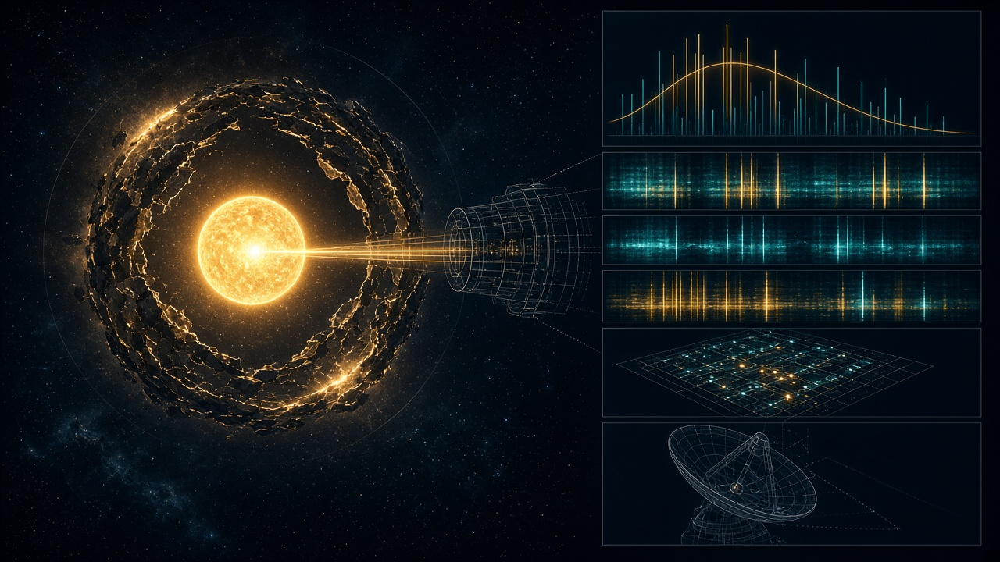

EXTRATERRESTRIAL
ARTIFICIAL INTELLIGENCE
Could machine civilisations precede us? Would we recognise them? Could their existence be concealed? A quantitative and evidentiary synthesis of primary astrobiology, Bayesian sensitivity analysis, interstellar probe engineering, technosignatures, UAP records, and secrecy incentives.
Probability numbers labelled illustrative are parameter sensitivity demonstrations, not empirical forecasts.
Executive Findings: Three Propositions & Six-Tier Qualitative Ranking
The existence of ancient extraterrestrial machine intelligence is a reasonable scientific hypothesis, not a demonstrated fact. A biological civilisation could develop autonomous machines and leave durable technological traces long after its makers disappear—changing where SETI should search without establishing that such a lineage has ever reached Earth [8, 9, 11].
Proposition (A): Beyond Earth Plausible · Unconfirmed
Machine intelligence somewhere beyond Earth: Planetary opportunity is vast (~300M rocky habitable-zone worlds in the Milky Way), and postbiological durability favours machine longevity over brief biological phases, but conditional transition probabilities remain unmeasured [1, 2, 8, 9].
Proposition (B): Solar System Artefacts Searchable · Unverified
Ancient autonomous artefacts in our Solar System: Sub-light probes can cross the Galaxy in ~10 Myr at 0.01c. Screening lunar regolith for micron-scale manufactured material or stable orbits is falsifiable Solar System archaeology, presently unverified [17, 18, 27].
Proposition (C): Organised Concealment Alleged · Unsubstantiated
Organised concealment of extraterrestrial AI on Earth: Governments demonstrably classify terrestrial platforms (U-2, A-12) and sensor parameters, but as of 24 October 2026, NASA, SETI, and AARO identify no verified alien hardware or custody [19, 20, 21, 23].
“Where I Land” — Qualitative Assessment of the Six Core Propositions Synthesis Ranking Matrix
If biological intelligence regularly creates machine intelligence, the dominant intelligent inhabitants of the universe might not be biological at all—shifting search priorities from habitable atmospheres and radio greetings to autonomous probes, artificial structures, and mid-infrared energy budgets.
| # | Proposition | Qualitative Assessment | Evidentiary Basis & Key Citations |
|---|---|---|---|
| 01 | Some alien civilisation has already created advanced AI | Plausible, potentially quite compelling | 6,445+ confirmed exoplanets, ~300M Milky Way HZ rocky worlds, 9.3 Gyr cosmic head start, rapid Earth abiogenesis [1, 2, 6, 8, 29]. |
| 02 | Machine civilisations have had millions of years to develop | Plausible conditional on their existence | Postbiological durability decouples technological lifetime L from biological fragility [8, 9, 11]. |
| 03 | Alien autonomous probes have explored our galaxy | Physically conceivable, unverified | At 0.01c, 100,000 ly takes ~10 Myr (no FTL required); replication & long-term fault tolerance remain unproven [11, 17, 18]. |
| 04 | Alien AI is currently observing humanity | Speculative | Conceivable under non-interference / dormant probe thought experiments, but zero observational evidence [13, 18, 25]. |
| 05 | Governments have concealed classified projects associated with UFO sightings | Documented | CIA records confirm classified U-2 and A-12 OXCART reconnaissance flights caused >50% of relevant late 1950s–60s UFO reports [23]. |
| 06 | Governments possess alien AI and are concealing it | Unsubstantiated | Congressional testimony (Sept 2025) & AARO FY2025 report (July 2026) show 205 unresolved cases, but zero verified extraterrestrial material [19, 20, 21, 22]. |
1. What Counts as Extraterrestrial AI & The 6-Step Evolutionary Trajectory
Astronomical searches target extraterrestrial technological intelligence (ETI) independent of cognitive substrate. Steven J. Dick (2009) developed the postbiological universe hypothesis [08], whereas Garrett (2024) in Acta Astronautica models AI as a potential Great Filter that destabilises civilisations before interstellar expansion [10].
Interactive 6-Step Postbiological Evolutionary Sequence Click any step to inspect constraints
Hypothetical trajectory from prebiotic chemistry to interstellar machine lineage (not an established universal sequence):
Entity Classification & Inference Boundaries Epistemic Scope
| Entity | What May Count | What Cannot Be Inferred |
|---|---|---|
| Biological civilisation | Artificial emissions, industrial chemicals, architecture | Its biology or intentions without further data |
| Autonomous alien AI | Manufactured probes, computing infrastructure, engineered transmissions | Consciousness, hostility, or physical presence on Earth |
| Machine descendants | Long-lived artefacts after original species has vanished | Whether their creators still exist |
| Earth-origin AI | Not extraterrestrial by origin | Its being advanced does not make it alien |
Engineering Definition of a “Machine Civilisation” Systems Requirement
For this analysis, “machine civilisation” denotes a technologically self-maintaining lineage capable of independent activity over geological and astronomical periods. This is far more demanding than a stationary supercomputer or a software foundation model that requires an external biological operator.
- Autonomous Energy Acquisition: Stellar harvesting, fission/fusion, or deep-space thermal management.
- Closed-Loop Manufacturing Supply Chains: Asteroid/regolith mining, refining, and lithography/metamaterial synthesis.
- Self-Repair & Fault Tolerance: Triple-modular redundancy, cosmic-ray annealing, and mechanical replacement.
- Intergenerational Knowledge Integrity: Error-correcting memory storage immune to replication drift over Myr timescales.
2–3. Evidence for Life vs. Machine Lineages: Interactive Bayesian Calculators
While Kipping (2020, 2025) finds stronger Bayesian odds for rapid abiogenesis based on a ~4.2 Ga LUCA [5, 6, 30], neither Perseverance’s potential Mars biosignature [04] nor contested K2-18 b atmospheric chemistry [28] confirms life or intelligence. Explore how the per-world transition chain pchain governs Galactic emergence across N worlds.
Model 1: Generative Conditional Probability Chain — P(≥ 1) = 1 − (1 − pchain)N Interactive Sensitivity Model
Model 2: Steady-State Detectability Is Not Existence — μ ≈ rLqs & The Cosmic Haystack Wright, Kanodia & Lubar (2018) [09, 13]
Under a steady-state approximation, expected detections μ ≈ rLqs, with null-detection probability P(null) = exp(−μ). A null result constrains the product rLqs, not any single parameter: long-lived quiet machines (L large, q tiny) and brief radio phases (L tiny) both yield μ ≪ 1.
4. Have Machine Civilisations Had Enough Time? (9.3 Gyr Head Start & Probe Simulator)
The universe is ~13.8 billion years old and Earth ~4.5 billion years old [29]—a 9.3 Gyr offset (modulated by early cosmic metallicity and stellar evolution). At just 1% of light speed (0.01c), an autonomous probe traverses 1,000 ly in 100,000 years and crosses 100,000 ly in ~10 million years without faster-than-light physics.
Interactive Von Neumann Probe Propagation & Replication Simulator Sub-Light Kinematics [11, 17]
5–7. Fermi Paradox Hypotheses, Technosignature Persistence & Search Programme
A research-grade search strategy prioritises physical invariants—entropy production, anomalous isotope ratios, persistent mid-infrared energy budgets, non-natural orbital trajectories, and repeatable encoded structure—over anthropocentric spacecraft silhouettes or radio conversations [11, 12, 13].
Why Haven’t We Detected Them? Five Core Hypotheses Fermi × AI Analysis
| Hypothesis | Mechanism & Physical Constraint |
|---|---|
| 1. Postbiological Durability [8, 9] | Machine descendants outlive biological creators; artefacts persist long after creators vanish, but operate at scales/wavelengths we rarely sample. |
| 2. AI Great Filter [10] | Developing autonomous general intelligence destabilises civilisations before they achieve self-sustaining space expansion (Garrett 2024). |
| 3. Quiet Optimisation / Thermodynamic Floor [11, 12] | Advanced systems minimise conspicuous leakage. Yet thermodynamic waste heat is unavoidable when work is done—requiring low energy or small spatial extent. |
| 4. Zoo / Dark Forest / Dormant Probes | Deliberate non-interference (Zoo), threat avoidance (Dark Forest), or intermittent dormancy across centuries—all weakly predictive without physical observables. |
| 5. Intrinsic Rarity [7] | Sandberg, Drexler & Ord (2018): evolutionary bottlenecks may simply make technological lineages exceptionally rare across the Galaxy. |
Illustrative Persistence Potential (Ordinal, Not Measured) Longevity Ranking [9, 16, 17]
Long-lived physical artefacts and waste-heat signatures offer higher persistence potential than transient electromagnetic broadcasts:
Persistence levels above are ordinal scenario judgements, not a statistical result. Long-lived artefacts may be more promising than transient transmissions, conditional on where we search and whether preserved material survives [9, 16, 17].

Technosignature Observables vs. Strong Natural Confounders Observational Discrimination
| Technosignature | Primary Observable | Strong Natural Confounders & 2025–2026 Case Studies |
|---|---|---|
| Industrial waste heat | Mid-infrared excess / unusual spectral energy budget | Circumstellar dust; obscured background galaxies. Project Hephaistos (2025, 2026 JWST) showed Dyson candidates G & D were background AGN / dusty galaxies [12, 14, 15]. |
| Artificial radio or optical emission | Narrowband drifting tone, pulse train, or broadband structured leakage | Terrestrial RFI, astrophysical transients, instrumentation artifacts. Broadband searches expanded by Zuckerman (2026) [13, 25, 26]. |
| Large-scale megastructures | Unusual transit profiles / persistent stellar dimming | Exocometary dust, warped disks, stellar activity, pipeline artifacts [11, 12]. |
| Ancient physical artefact | Manufacturing microstructure, non-natural isotope ratios, traceable provenance | Meteoritic inclusions, terrestrial contamination, geological processes (Silurian hypothesis, Schmidt & Frank 2018; Lunar regolith, Pinault et al. 2026) [16, 17, 27]. |
| Autonomous interstellar probe | Repeatable non-gravitational thrust, engineered albedo/materials, transmissions | Natural cometary outgassing, optical artifacts, incomplete orbital fit. 2026 ATA search of 3I/ATLAS found no ETI emissions [18]. |
Section 7: Testable Search Programme & 7-Step Discovery Standard Falsifiable Protocol
Near-term searches requiring no Earth encounter: High-resolution VLBI/JWST disconfirmation of IR excesses [14, 15]; narrowband + broadband optical/radio pipelines [26]; calibrated spectroscopy of interstellar visitors like 3I/ATLAS [18]; sedimentary/isotopic records [16]; and micron-scale lunar soil screening [17, 27].
- Calibrated detection with quantified signal-to-noise.
- Raw data & instrument metadata preserved and accessible.
- Independent replication across distinct observatories/labs.
- Explicitly tested terrestrial & natural alternatives (RFI, dust, AGN).
- Documented material custody & chain of provenance (for physical samples).
- Physics-consistent reconstruction of energy and trajectory.
- Public methods & adversarial peer review (IAA SETI June 2026 protocol [24]).
8–10. Secrecy, UAP Evidence & Interactive Bayesian Cover-Up Scrutiny
Historical secrecy is real—CIA records confirm classified U-2 and A-12 OXCART aircraft accounted for more than half (>50%) of relevant UFO reports in the late 1950s and 1960s [23]. Yet concealing human reconnaissance capabilities is not evidence of alien reverse engineering.
CIA U-2 & A-12 OXCART Precedent Documented [23]
CIA historical accounts establish that high-altitude U-2 and Mach-3 A-12 OXCART reconnaissance flights generated >50% of relevant UFO reports during parts of the late 1950s and 1960s. Because the airframes and sensor payloads were classified, sightings went officially unexplained—proving H2 (ordinary classification of terrestrial tech).
Sept 2025 US House UAP Hearing Testimony vs. Proof
In September 2025, a US House Oversight hearing addressed concerns over withheld UAP records, alleged defence contractor involvement, and whistleblower protection. Congressional testimony and oversight scrutiny are important institutional processes, but do not constitute verified physical evidence of extraterrestrial technology [19, 20].
July 2026 AARO FY2025 Report 319 Cohort Cases [21, 22]
Released in July 2026, AARO’s FY2025 report recorded 319 UAP reports in its reporting cohort; Senator Gillibrand summarised 114 explained (35.7%) and 205 unresolved (64.3%). Mixing new intake with older resolved cases is a denominator error, and “Unresolved” is not an alien-origin classification.
Section 9: Interactive Bayesian Scrutiny of a Cover-Up Claim — O(H|E) = O(H) × LR Bayesian Odds Update
Let H be “a government possesses verified alien AI technology and is concealing it”, and E be new evidence with Likelihood Ratio LR = P(E|H) / P(E|¬H). Repeating uncorroborated second-hand stories or pointing to ordinary military classification yields LR ≈ 1.
- H1 — Genuine concealment: Predicts recoverable provenance & non-terrestrial isotopes.
- H2 — Ordinary classification: Undisclosed human aircraft/sensors (U-2 / A-12 precedent).
- H3 — Information cascades: Correlated second-hand witness stories without physical samples.
- H4 — Sensor / reporting failures: Parallax, gimbal glare, range-finding illusions.
- H5 — Non-human concealment: Autonomous probe avoids contact; requires no human cover-up.
Why Might Any Government Withhold Related Information? Institutional Incentives
| Hypothesised Incentive | Potential Custodians | Evidence Status |
|---|---|---|
| Protect classified sensor performance & collection locations | Defence agencies / intelligence organisations | Documented General secrecy established; not proof of aliens. |
| Keep experimental domestic aerospace systems covert | Military R&D / cleared defence contractors | Historical Precedent CIA U-2 & A-12 OXCART (>50% of 1950s–60s UFOs) [23]. |
| Preserve strategic monopoly / technological advantage from novel artefact | Hypothetical compartmentalised recovery programme | Conditional Depends on unverified hardware recovery. |
| Avoid exposure of improper oversight or unauthorised procurement | Hypothetical officials / programme sponsors | Unproven Plausible institutional incentive; case-specific proof absent. |
| Delay disclosure to manage societal disruption | Hypothetical political leadership | Speculative No established universal public reaction model. |
Section 10: Could the Extraterrestrial AI Choose Invisibility? Non-Human Optimisation
If an ancient autonomous probe reached our Solar System, it might conceal itself without any human government knowing. Combining alien self-concealment with a government cover-up creates a compound claim whose evidentiary burden is higher, not lower.
- Non-Interference: Avoid perturbing a developing biosphere or pre-postbiological culture.
- Risk Minimisation: Avoid creating a detectable electromagnetic or orbital target.
- Observational Integrity: Passive telemetry yields cleaner sociological/planetary data than overt contact.
- Resource Economy: Remain dormant in stable Lagrange/lunar/asteroid orbits, waking only intermittently.
- Non-Anthropocentric Objectives: Intelligence does not imply human motives (conquest, money, prestige, religion, or desire to converse with biology).
11–12. What Would Change the Assessment & Four Research Priorities
The IAA SETI Committee revised its detection principles in June 2026 to emphasise independent verification, transparency, and open communication [24]. Select a discovery scenario below to see how it updates each level of inference.
Section 11: Interactive Inference Update Explorer Discovery Impact Simulator
Priority 01[11, 12, 17]
Look for Durable Physics
Mid-infrared waste heat, material microstructures, non-natural isotopic ratios, and orbital anomalies offer more durable targets than transient radio greetings.
Priority 02[5, 6, 7]
Fix Priors with Evidence
An independent Solar System origin of life, exoplanet biosignatures, or a verified artefact would radically narrow currently unidentifiable conditional probabilities.
Priority 03[19, 20, 21, 23]
Treat Secrecy as Falsifiable
Demand records with chain-of-custody provenance and independent laboratory material analysis; distinguish sensor protection from alien custody claims.
Priority 04[19, 24]
Independent Replication
Make anomaly telemetry open by default and use multi-observatory campaigns so no single institution or classifier controls the conclusion.
References & Primary Sources ([01]–[30])
Numbered references link directly to the originating peer-reviewed research, preprint, or institutional record (NASA, PNAS, Nature, Astrobiology, arXiv, SETI Institute, CIA, and AARO).